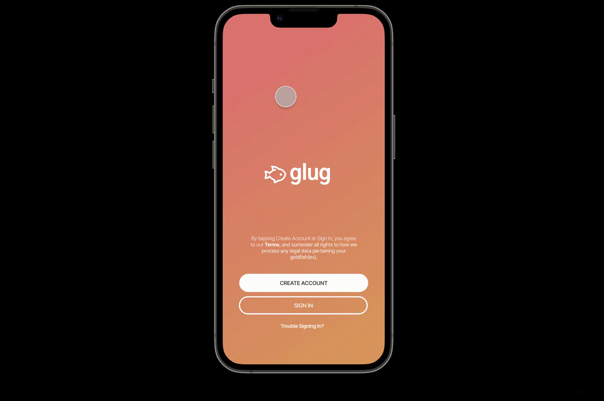

High-fidelity Prototyping
Designing a Dating App for Goldfish
Overview
For this project, we designed a prototype of an app aimed at an unrealistic audience to challenge ourselves to consider the particular needs of this audience. We decided to design a dating app for goldfish.
Design considerations
In order to design this prototype, we made many decisions so that our prototype had an intuitive mental model while appealing to the target audience. Some considerations are listed below:
- What is an existing app design that can serve as a template to make sure our model is consistent with users' mental model of dating apps?
- How can we adapt this template to suit our unique audience?
- How can we use design elements like color scheme, font, and branding to connect with the audience?
Considering these factors and many others, we decided to model our prototype on Tinder. We then decided on a fish icon and an onomatopoeic and memorable name "Glug" for our app to solidify the app's audience and concept. Finally, we decided to stick to a warmer color palette as our target audience was goldfish.
Final prototype
In planning for the final prototype, we referenced Tinder screenshots to model our pages. We decided on a few key screens to create in this prototype:
- Sign-in: To highlight the branding of the app, with color scheme, name, and logo highlighted
- Home: Showing possible matches for easy access, as this is the app's main purpose
- Messages: Once matches are made, communication is the next important step. This page shows new matches and recent conversations, as well as links to the home and profile (not prototyped) pages
- Bubbles message: This page models what a possible chat could look like. It is accessed from the main chats page, and links back to the main chat page
